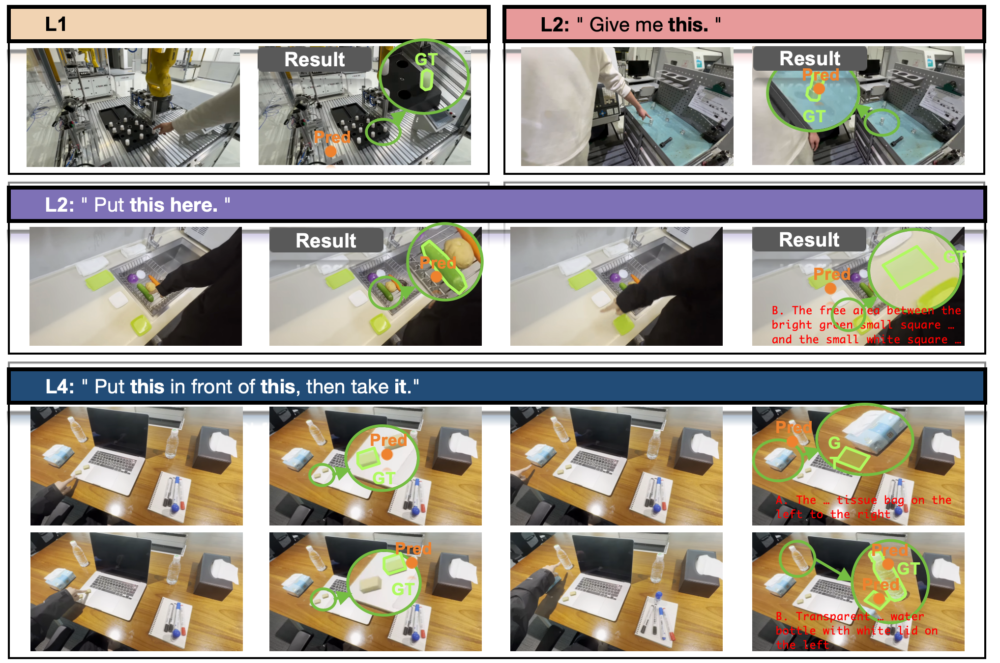

EcoG-Bench: Egocentric Co-Speech Grounding Benchmark
EcoG challenges agents to localize physical objects within egocentric video streams by parsing the spatiotemporal synergy between ambiguous speech and dynamic user gestures.
Dataset Card — License, Privacy & Bias
Dataset Distribution — Language × Scene × Level
📄 License
Released under CC BY 4.0. Academic/non-commercial use permitted with attribution. Commercial use requires explicit written consent.
🔐 Privacy Statement
All recordings conducted under IRB-approved protocols. Participants provided informed written consent. All faces and PII blurred prior to release. No sensitive personal data included.
⚖️ Known Biases
Scene bias: Industrial scenes are over-represented in small-object samples (≈49.2% of targets < 0.5% frame area), inflating difficulty on industrial subsets.
Language balance: EN and ZH are independently collected, not translational pairs. Instruction complexity distributions may vary between the two.
Demographics: All participants recruited from one research institution; gesture styles may not generalize globally.
VL modality gap: ASR text substitutes may introduce errors on technical industrial vocabulary, unfairly penalizing VL models on temporal grounding.
Annotation Protocol
Video Ingestion
Ego-centric clips imported; scene & instruction type tagged
ASR Transcription
Whisper-large-v3 + manual verification; word-level timestamps (ms)
Point Annotation
Annotator clicks pixel coordinates on last frame of clip
Temporal Labeling
ASR word boundaries aligned to object references (LLM-assisted + verified)
Mask Segmentation
SAM3-based segmentation mask from annotated click point
QA Review
3-reviewer check; Cohen's κ > 0.80 required for release
Instruction Type Taxonomy
| Level | Template | Description | # Refs | Temporal |
|---|---|---|---|---|
| L1 | Instruction1 | Gesture only, no speech | 1 | No |
| L2 | Instruction2 | Single-object manipulation | 1 | Yes |
| L3 | Instruction3 | Single-object placement (src→dst) | 2 | Yes |
| L3 | Instruction4 | Relational placement | 2 | Yes |
| L4 | Instruction5 | Multi-step: place then pick (3 refs) | 3 | Yes |
| L4 | Instruction6 | Multi-step: place then place (4 refs) | 4 | Yes |
Quality Control
- ≥ 2 independent annotators per sample
- Disagreements resolved by senior adjudicator
- Spatial annotations validated against SAM3 masks
- Temporal annotations validated via ASR alignment (GPT-4o assisted)
- Inter-annotator agreement: κ = 0.84 (spatial), 0.87 (classification)
Object-Size Distribution (587 annotated targets)
Industrial scenes account for the majority of Small objects (screws, bolts, micro-components).
Model Prompt Design
[y,x] coord order; others use [x,y].<asr_data> XML tag. All VL models use [x,y] coord order.Input Mode & Coordinate Convention by Model Family
| Model Family | Type | Input Mode | Coord Format | ASR in Prompt | Frame Timestamps | Frame Rate |
|---|---|---|---|---|---|---|
| Gemini-3-Pro/Flash | Pro | Native video file | [y, x] (yx) | No | No | Native |
| Qwen3-Omni series | Prop/OS | Native video file | [x, y] (xy) | No | No | Native |
| Ming-Lite-Omni / MiniCPM-o | OS | Native video file | [x, y] (xy) | No | No | Native |
| GPT-5 series | Pro | Sampled frames | [x, y] (xy) | Yes | Yes (<timestamp_ms>) | 2 fps |
| Qwen3-VL series | OS | Sampled frames | [x, y] (xy) | Yes | Yes (<timestamp_ms>) | 2 fps |
| LLaVA series | OS | Sampled frames | [x, y] (xy) | Yes | Yes (<timestamp_ms>) | 2 fps |
Human Baseline — Test Protocol
Interface Overview — 3 Tasks per Referent
Audio enabled, full clip
Drag progress-bar → gesture peak ms
Click pixel on last frame
Select option label from list
Steps 2–4 repeat for each referent (1–4 referents for L1–L4)
Participant Protocol (5 annotators per video)
-
①Recruitment & Screening
5 adult volunteers (≥18 yrs) per video, fluent in instruction language (EN or ZH). Naïve to dataset. Written informed consent under IRB approval. 5 practice examples before formal annotation.
-
②When — Temporal Grounding (Progress-bar Drag)
After watching the full video with audio, drag a ms-resolution progress-bar slider to mark the moment the pointing gesture first peaked toward each referenced object/region. One drag per referent, in instruction order.
-
③Where — Spatial Grounding (Click on Last Frame)
The annotation interface shows the last frame of the video clip (not the intermediate frame at the temporal selection). The participant clicks a single pixel coordinate on this frame to indicate the target object or region center. Clicking anywhere within the ground-truth mask counts as correct.
-
④What — Intent Classification (Option Selection)
Same 8–12 option list as the models. Participant selects option label(s) in execution order.
-
⑤Aggregation
Each participant's response triplet evaluated with Acc_eco. Human baseline = mean across 5 participants per sample, then dataset average. Samples with ≥2 invalid responses excluded.
Spatial Threshold Sensitivity: δ = 50 → 100 px
When mask IS available: Acc_s(k) = 1 if pred_pixel ∈ mask_region
Acc_s vs. Threshold δ (px)
Model rankings are strictly preserved across all tested thresholds (δ=100–150 px). Gemini-3-Flash consistently leads on Acc_s.
Δ Acc_s relative to δ=100 baseline
| Model | δ=100 (base) | δ=110 | Δ110 | δ=120 | Δ120 | δ=130 | Δ130 | δ=140 | Δ140 | δ=150 | Δ150 |
|---|---|---|---|---|---|---|---|---|---|---|---|
| Gemini-3-Pro | 33.9 | 33.9 | +0.0 | 33.9 | +0.0 | 33.9 | +0.0 | 33.9 | +0.0 | 33.9 | +0.0 |
| Gemini-3-Flash | 44.6 | 44.6 | +0.0 | 44.6 | +0.0 | 44.6 | +0.0 | 44.6 | +0.0 | 44.6 | +0.0 |
| Qwen3-Omni-30B-A3B | 6.2 | 6.8 | +0.6 | 7.4 | +1.2 | 8.4 | +2.2 | 9.5 | +3.3 | 10.0 | +3.8 |
| Qwen3-VL-30B | 30.2 | 30.2 | +0.0 | 30.2 | +0.0 | 30.2 | +0.0 | 30.2 | +0.0 | 30.2 | +0.0 |
Extended Data Statistics
Failure Bottleneck — Omni Models
Each failure sample classified into one of 4 mutually exclusive categories based on which sub-metrics fail. Bars show percentage of failing samples per model.
(0,1,1) — classification fails only
(1,0,1) — spatial fails only
(1,1,0) — temporal fails only
(0,0,1)/(0,1,0)/(1,0,0)/(0,0,0) — multiple metrics fail
ci = 𝟙[cls✓]si = 𝟙[spatial✓]ti = 𝟙[temporal✓]
Component Metrics (Overall)
Acc_eco by Scene Domain
Acc_s by Object Size
Performance by Object Size (Acc_eco / Acc_s, %)
| Model | Small (<0.5%, n=289) | Medium (0.5–2%, n=251) | Large (≥2%, n=47) | |||
|---|---|---|---|---|---|---|
| Acc_eco | Acc_s | Acc_eco | Acc_s | Acc_eco | Acc_s | |
| Gemini-3-Pro | 3.0 | 8.7 | 16.9 | 27.7 | 16.0 | 24.0 |
| Gemini-3-Flash | 2.6 | 12.2 | 14.0 | 34.8 | 18.6 | 36.5 |
| Qwen3-VL-30B | 4.0 | 14.4 | 13.2 | 23.8 | 17.2 | 28.5 |
| Qwen3-Omni-Flash | 0.7 | 6.3 | 2.9 | 14.5 | 7.3 | 19.2 |
Input Modality Comparison — Images+ASR vs. Native Video-Omni
Overall Metric Comparison (Images+ASR vs Native Video-Omni)
Acc_eco Gain per Level (Δ = Img+ASR − Video-Omni, %)
Per-Level Detailed Comparison — Images+ASR vs. Native Video-Omni
| Model — Level | Acc_cls (%) | Acc_s (%) | Acc_t (%) | Acc_eco (%) | Acc_seq (%) | ||||||||||
|---|---|---|---|---|---|---|---|---|---|---|---|---|---|---|---|
| Img+ASR | VideoOmni | Δ | Img+ASR | VideoOmni | Δ | Img+ASR | VideoOmni | Δ | Img+ASR | VideoOmni | Δ | Img+ASR | VideoOmni | Δ | |
| Gemini-3-Pro — L1 | 77.0 | 79.9 | -2.9 | 69.8 | 40.3 | +29.5 | 88.5 | 80.6 | +7.9 | 59.0 | 30.2 | +28.8 | 59.0 | 30.2 | +28.8 |
| Gemini-3-Pro — L2 | 77.4 | 71.5 | +5.8 | 73.0 | 41.6 | +31.4 | 86.9 | 76.6 | +10.2 | 59.9 | 29.2 | +30.7 | 59.9 | 29.2 | +30.7 |
| Gemini-3-Pro — L3 | 65.5 | 51.9 | +13.6 | 51.4 | 29.8 | +21.7 | 72.9 | 51.2 | +21.7 | 34.5 | 10.6 | +23.9 | 11.6 | 1.8 | +9.9 |
| Gemini-3-Pro — L4 | 71.2 | 64.5 | +6.7 | 47.7 | 30.9 | +16.8 | 68.4 | 38.1 | +30.3 | 34.2 | 10.2 | +24.0 | 4.0 | 0.4 | +3.6 |
| Gemini-3-Pro — Ov. | 71.2 | 63.9 | +7.3 | 57.1 | 33.9 | +23.1 | 76.5 | 56.5 | +20.0 | 42.9 | 17.0 | +25.9 | 25.5 | 10.9 | +14.7 |
| Gemini-3-Flash — L1 | 87.8 | 71.2 | +16.5 | 73.4 | 46.8 | +26.6 | 94.2 | 27.3 | +66.9 | 66.9 | 12.2 | +54.7 | 66.9 | 12.2 | +54.7 |
| Gemini-3-Flash — L2 | 86.9 | 69.3 | +17.5 | 75.2 | 46.0 | +29.2 | 91.2 | 27.7 | +63.5 | 65.7 | 10.2 | +55.5 | 65.7 | 10.2 | +55.5 |
| Gemini-3-Flash — L3 | 71.3 | 65.3 | +6.0 | 62.1 | 42.1 | +20.1 | 77.1 | 12.7 | +64.4 | 40.0 | 3.2 | +36.8 | 17.6 | 0.7 | +16.9 |
| Gemini-3-Flash — L4 | 82.3 | 79.5 | +2.8 | 51.7 | 45.7 | +6.0 | 75.0 | 17.7 | +57.3 | 37.3 | 6.6 | +30.7 | 6.8 | 0.0 | +6.8 |
| Gemini-3-Flash — Ov. | 80.1 | 71.4 | +8.7 | 63.0 | 44.6 | +18.4 | 81.8 | 19.3 | +62.5 | 48.1 | 7.0 | +41.1 | 30.8 | 4.1 | +26.8 |
| Qwen3-Omni-30B-A3B — L1 | 36.0 | 40.3 | -4.3 | 10.1 | 12.2 | -2.2 | 31.7 | 9.4 | +22.3 | 2.9 | 3.6 | -0.7 | 2.9 | 3.6 | -0.7 |
| Qwen3-Omni-30B-A3B — L2 | 29.9 | 48.9 | -19.0 | 6.6 | 7.3 | -0.7 | 32.1 | 6.6 | +25.5 | 0.7 | 0.7 | +0.0 | 0.7 | 0.7 | +0.0 |
| Qwen3-Omni-30B-A3B — L3 | 13.2 | 23.9 | -10.7 | 6.2 | 3.7 | +2.5 | 7.9 | 1.9 | +6.0 | 0.0 | 0.0 | +0.0 | 0.0 | 0.0 | +0.0 |
| Qwen3-Omni-30B-A3B — L4 | 6.6 | 19.1 | -12.5 | 3.2 | 3.6 | -0.4 | 0.6 | 0.7 | -0.1 | 0.1 | 0.0 | +0.1 | 0.0 | 0.0 | +0.0 |
| Qwen3-Omni-30B-A3B — Ov. | 17.9 | 29.5 | -11.6 | 6.0 | 5.7 | +0.3 | 13.8 | 3.6 | +10.2 | 0.7 | 0.7 | -0.1 | 0.6 | 0.7 | -0.1 |
| Qwen3-Omni-Flash — L1 | 32.4 | 59.7 | -27.3 | 18.7 | 26.6 | -7.9 | 21.6 | 8.6 | +12.9 | 9.4 | 2.9 | +6.5 | 9.4 | 2.9 | +6.5 |
| Qwen3-Omni-Flash — L2 | 55.5 | 66.4 | -10.9 | 33.6 | 28.5 | +5.1 | 78.1 | 7.3 | +70.8 | 28.5 | 0.7 | +27.7 | 28.5 | 0.7 | +27.7 |
| Qwen3-Omni-Flash — L3 | 29.9 | 40.5 | -10.6 | 13.7 | 16.0 | -2.3 | 24.3 | 1.6 | +22.7 | 5.1 | 0.2 | +4.9 | 0.4 | 0.0 | +0.4 |
| Qwen3-Omni-Flash — L4 | 23.0 | 37.2 | -14.1 | 13.0 | 12.9 | +0.1 | 16.5 | 0.5 | +16.0 | 3.5 | 0.0 | +3.5 | 0.0 | 0.0 | +0.0 |
| Qwen3-Omni-Flash — Ov. | 32.5 | 47.1 | -14.6 | 17.7 | 19.0 | -1.3 | 30.5 | 3.4 | +27.1 | 9.3 | 0.7 | +8.6 | 6.5 | 0.6 | +5.9 |
Temporal Distribution Analysis — Stroke & Predicted Timestamps
timestamp that falls within the stroke window to earn Acc_t = 1.
This section visualises the GT stroke distribution and the timestamp predictions from all evaluated models.
Gesture Stroke Duration by Level (ms)
Box: Q1–Q3 with median; whiskers: 5th/95th percentiles. Orange dot = mean.
Stroke Timeline Position — by Stroke Index (mean ms, video start = 0)
Floating bars show average [stroke_begin → stroke_end] per stroke index (#1–#4). Stroke #1 is the 1st gesture in the sequence; L3 has 2 strokes (#1–#2), L4 has 3–4 strokes (#1–#4). Midpoint marker (●) = mean stroke midpoint.
Predicted Timestamp Distribution — Native Video-Omni Input (grouped by stroke index)
Each row = one (stroke index, model) pair. Rows are grouped by stroke index (#1 → #4) to show how prediction accuracy degrades as the target gesture appears later in the sequence. Green rows = GT Stroke Midpoint (ideal target for each index).
Predicted Timestamp Distribution — Multi-Image + ASR Text Input (grouped by stroke index)
Same layout as above but for the images+ASR input condition. Compare stroke-by-stroke with the native video plot to see how explicit ASR timestamps help across different sequence positions.
Mean Predicted Timestamp by Level — Native Video Input
Lines per model; dashed green = GT stroke midpoint mean.
Mean Predicted Timestamp by Level — Multi-Image Input
Lines per model; dashed green = GT stroke midpoint mean.
Sub-metric Decoupling & Failure Bottleneck Analysis
Sub-metric Performance Comparison — All Models (Overall, %)
Models sorted by Acc_eco (red bar). Note how Acc_t (green) and Acc_eco rankings diverge significantly — e.g., GPT-5-mini achieves top-tier Acc_t yet bottom-tier Acc_eco, demonstrating the necessity of joint evaluation.
Acc_eco Heatmap — Scene × Difficulty Level (%, all models averaged)
Darker cell = higher accuracy. Industrial scenes are consistently the hardest across all levels, while L3/L4 (multi-referent) drops below 3.5% in all scenes.
Cross-Lingual Robustness & Temporal Calibration Analysis
EN vs ZH Acc_eco per Model (%, all levels)
Each model shows EN (filled circle) and ZH (ring) scores with a connecting line. Green = ZH > EN Red = ZH < EN
Mean Timestamp Prediction Bias (pred − GT stroke midpoint, ms)
Negative = model predicts earlier than the actual gesture peak. Video-input models show a systematic ~2000ms early bias; images+ASR input corrects this nearly to zero.
Temporal Calibration Accuracy — within ±500ms and ±1000ms of GT Stroke Midpoint
Proportion of predictions that land within the tolerance window. Video input: only 5–19% within ±500ms. Images+ASR: 44–67% within ±500ms — a 7–8× improvement.
Typical Failure Modes — Case Studies

Limitations & Broader Impact
🔒 Data Privacy Measures
- ✓Face Avoidance by Protocol
No facial information appears in any released video. Participants were required to wear masks covering the nose and mouth during recording, and camera angles were arranged to exclude faces from the field of view throughout the entire data collection process.
- ✓PII Removal
Screens, whiteboards, nameplates, and badges visible in the scene were manually reviewed and redacted.
- ✓Ego-centric Framing
Recordings capture only the operator's hands and immediate task workspace, minimizing bystander capture.
- ✓No Biometric Identity Data
No participant names, IDs, or demographic attributes released. Voice-prints not annotated.
⚠️ Limitations
- !Closed-World Option Set
Options constructed from scene-visible objects. Open-world evaluation remains future work.
- !Static Last-Frame Grounding
Spatial coordinates evaluated against the final frame. Moving targets not explicitly handled.
- !EN / ZH Only
Multilingual extension left for future work.
- !Fixed Head-mounted Camera
Handheld or PTZ cameras may produce different gesture characteristics.
🌍 Broader Impact
EcoG-Bench accelerates research on multimodal human-robot interaction and embodied AI, providing a rigorous benchmark that jointly evaluates temporal, spatial, and semantic understanding.
Positive impacts: Improved robotics for manufacturing/kitchen tasks; lower barriers for non-expert operators; better evaluation methodology for the multimodal AI community.
Risks: Ego-centric grounding could theoretically be misused for surveillance. Explicitly prohibited in the dataset license. Dataset contains no biometric identification data.